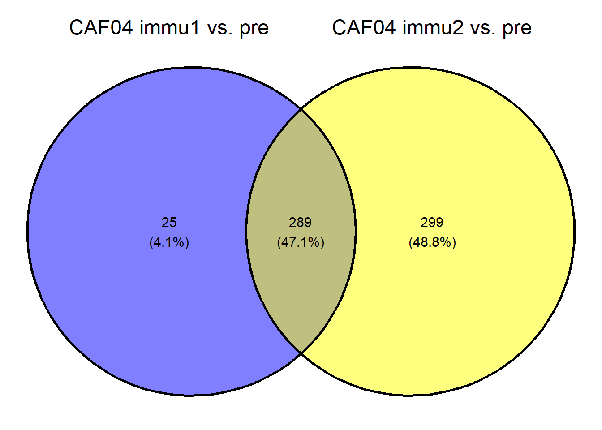

library(DESeq2)
library(EnhancedVolcano)
library(ggvenn)
library(stringr)
library(ggpubr)RNA-seq: downstream analysis
DE analysis
se <- readRDS("../data/se_pcoding_scale_abundant_filtS.rds")Compare after- (timepoint 1, 2) and pre- immune within each vacc
#|message:False
vacc_l <- se$vacc %>% unique()
DGE_immu_vs_pre <-
lapply(vacc_l,
function(vacc){
se <-
se[rowData(se)$.abundant == TRUE,se$vacc == vacc]
rownames(se) <- rowData(se)$gene_name
count <- se %>% assay(1) %>%
as.matrix() %>%
round()
dds <-
DESeqDataSetFromMatrix(
count,
colData = colData(se),
design = ~ animal + timepoint
)
dds <- DESeq(dds, parallel = F)
immu1_vs_pre <-
lfcShrink(dds,
coef = "timepoint_immu1_vs_pre",
type = "apeglm",
parallel = F)
immu2_vs_pre <-
lfcShrink(dds,
coef = "timepoint_immu2_vs_pre",
type = "apeglm",
parallel = F)
DGE_immu_vs_pre <-
list("immu1_vs_pre" = immu1_vs_pre,
"immu2_vs_pre" = immu2_vs_pre)
return(DGE_immu_vs_pre)
})converting counts to integer modeWarning in DESeqDataSet(se, design = design, ignoreRank): some variables in
design formula are characters, converting to factorsestimating size factorsestimating dispersionsgene-wise dispersion estimatesmean-dispersion relationshipfinal dispersion estimatesfitting model and testingusing 'apeglm' for LFC shrinkage. If used in published research, please cite:
Zhu, A., Ibrahim, J.G., Love, M.I. (2018) Heavy-tailed prior distributions for
sequence count data: removing the noise and preserving large differences.
Bioinformatics. https://doi.org/10.1093/bioinformatics/bty895
using 'apeglm' for LFC shrinkage. If used in published research, please cite:
Zhu, A., Ibrahim, J.G., Love, M.I. (2018) Heavy-tailed prior distributions for
sequence count data: removing the noise and preserving large differences.
Bioinformatics. https://doi.org/10.1093/bioinformatics/bty895converting counts to integer modeWarning in DESeqDataSet(se, design = design, ignoreRank): some variables in
design formula are characters, converting to factorsestimating size factorsestimating dispersionsgene-wise dispersion estimatesmean-dispersion relationshipfinal dispersion estimatesfitting model and testingusing 'apeglm' for LFC shrinkage. If used in published research, please cite:
Zhu, A., Ibrahim, J.G., Love, M.I. (2018) Heavy-tailed prior distributions for
sequence count data: removing the noise and preserving large differences.
Bioinformatics. https://doi.org/10.1093/bioinformatics/bty895
using 'apeglm' for LFC shrinkage. If used in published research, please cite:
Zhu, A., Ibrahim, J.G., Love, M.I. (2018) Heavy-tailed prior distributions for
sequence count data: removing the noise and preserving large differences.
Bioinformatics. https://doi.org/10.1093/bioinformatics/bty895names(DGE_immu_vs_pre) <- vacc_l
readr::write_rds(DGE_immu_vs_pre, "../data/DElist/DGE_immu_vs_pre.rds")gene_data_Type <- readRDS("../data/gene_data_Type.rds")
if (!dir.exists("../data/DElist/")) {dir.create("../data/DElist")}
if (!dir.exists("../data/figure")) {dir.create("../data/figure")}
mapply(function(vacc, contrast){
res <- DGE_immu_vs_pre[[vacc]][[contrast]] %>%
as_tibble(rownames = "gene_name") %>%
filter(!gene_name %>% str_detect("ENSMFAG"))
volcano <-
EnhancedVolcano(
res,
lab = res$gene_name,
x = "log2FoldChange",
y = "pvalue",
title = vacc,
subtitle = contrast
)
res_filt <-
res %>% filter(abs(log2FoldChange) > 1,
padj < .05) %>%
arrange(-log2FoldChange) %>%
left_join(gene_data_Type %>%
dplyr::select(gene_name, description))
res_filt %>% readr::write_csv(
paste0("../data/DElist/",
paste0("DE_", vacc, "_",contrast, ".csv"))
)
ggsave(paste0("../data/figure/",
paste0("vocalno_", vacc, "_",contrast, ".jpg")),
volcano, width = 8, height = 8, dpi = 600)
},
rep(vacc_l, 2),
c(rep("immu1_vs_pre", 2), rep("immu2_vs_pre", 2))
)Joining with `by = join_by(gene_name)`
Joining with `by = join_by(gene_name)`
Joining with `by = join_by(gene_name)`
Joining with `by = join_by(gene_name)` H107_CAF09c
"../data/figure/vocalno_H107_CAF09c_immu1_vs_pre.jpg"
H107_CAF04_CpG
"../data/figure/vocalno_H107_CAF04_CpG_immu1_vs_pre.jpg"
H107_CAF09c
"../data/figure/vocalno_H107_CAF09c_immu2_vs_pre.jpg"
H107_CAF04_CpG
"../data/figure/vocalno_H107_CAF04_CpG_immu2_vs_pre.jpg" CAF04 immune 1 vs immune 2
fun_extract_de_up <-
function(vacc, contrast){
res <- DGE_immu_vs_pre[[vacc]][[contrast]] %>%
as_tibble(rownames = "gene_name") %>%
filter(!gene_name %>% str_detect("ENSMFAG"))
res_filt <-
res %>% filter(log2FoldChange > 1,
padj < .05) %>%
arrange(-log2FoldChange) %>%
left_join(gene_data_Type %>%
dplyr::select(gene_name, description),
by = "gene_name")
g_name <- res_filt %>% pull(gene_name)
return(g_name)
}
CAF09_immu1 <- fun_extract_de_up("H107_CAF09c", "immu1_vs_pre")
CAF09_immu2 <- fun_extract_de_up("H107_CAF09c", "immu2_vs_pre")
list(`CAF09 immu1 vs. pre` = CAF09_immu1,
`CAF09 immu2 vs. pre` = CAF09_immu2) %>%
ggvenn()CAF04_immu1 <- fun_extract_de_up("H107_CAF04_CpG", "immu1_vs_pre")
CAF04_immu2 <- fun_extract_de_up("H107_CAF04_CpG", "immu2_vs_pre")
list(`CAF04 immu1 vs. pre` = CAF04_immu1,
`CAF04 immu2 vs. pre` = CAF04_immu2) %>%
ggvenn()
CAF09 vs CAF04CpG
immu1_caf09_caf04CpG <-
list(CAF09 = CAF09_immu1,
CAF04_CpG = CAF04_immu1) %>%
ggvenn() +
ggtitle("Up-regulated genes - after first immunization")
immu1_caf09_caf04CpG
library(enrichR)Welcome to enrichR
Checking connection ... Enrichr ... Connection is Live!
FlyEnrichr ... Connection is Live!
WormEnrichr ... Connection is Live!
YeastEnrichr ... Connection is Live!
FishEnrichr ... Connection is Live!
OxEnrichr ... Connection is Live!# library(gprofiler2)
# convert <-
# gprofiler2::gorth(CAF09_immu1,
# source_organism = "mfascicularis",
# target_organism = "hsapiens")
# mean(convert$input == convert$ortholog_name) # 99.87%
enrichment <-
enrichr(CAF09_immu1[CAF09_immu1 %in% CAF04_immu1],
databases = "GO_Biological_Process_2023") # overlap 304Uploading data to Enrichr... Done.
Querying GO_Biological_Process_2023... Done.
Parsing results... Done.enrichment[[1]] %>%
as_tibble() %>%
arrange(-Combined.Score)# A tibble: 2,015 × 9
Term Overlap P.value Adjusted.P.value Old.P.value Old.Adjusted.P.value
<chr> <chr> <dbl> <dbl> <int> <int>
1 Interleuk… 5/5 7.85e-10 7.91e- 8 0 0
2 Regulatio… 4/5 2.59e- 7 1.63e- 5 0 0
3 Regulatio… 4/6 7.66e- 7 4.29e- 5 0 0
4 Defense R… 41/189 1.53e-35 3.09e-32 0 0
5 Defense R… 34/148 1.73e-30 1.74e-27 0 0
6 Negative … 18/61 8.25e-19 5.54e-16 0 0
7 Positive … 3/5 3.40e- 5 1.02e- 3 0 0
8 Regulatio… 3/5 3.40e- 5 1.02e- 3 0 0
9 Negative … 15/53 1.41e-15 7.08e-13 0 0
10 Cytosolic… 8/23 1.05e- 9 1.00e- 7 0 0
# ℹ 2,005 more rows
# ℹ 3 more variables: Odds.Ratio <dbl>, Combined.Score <dbl>, Genes <chr>enrichment <-
enrichr(CAF09_immu1[!CAF09_immu1 %in% CAF04_immu1],
databases = "GO_Biological_Process_2023") # overlap 304Uploading data to Enrichr... Done.
Querying GO_Biological_Process_2023... Done.
Parsing results... Done.enrichment[[1]] %>%
as_tibble() %>%
arrange(-Combined.Score)# A tibble: 2,748 × 9
Term Overlap P.value Adjusted.P.value Old.P.value Old.Adjusted.P.value
<chr> <chr> <dbl> <dbl> <int> <int>
1 Positive … 3/5 1.45e- 4 0.00665 0 0
2 Interleuk… 3/6 2.85e- 4 0.0107 0 0
3 Positive … 14/57 7.83e-11 0.0000000717 0 0
4 Antigen P… 6/18 3.21e- 6 0.000315 0 0
5 Positive … 14/64 4.16e-10 0.000000190 0 0
6 Regulatio… 3/7 4.90e- 4 0.0160 0 0
7 Growth Ho… 3/7 4.90e- 4 0.0160 0 0
8 Positive … 8/29 3.61e- 7 0.0000530 0 0
9 Macrophag… 9/35 1.29e- 7 0.0000253 0 0
10 Microglia… 6/20 6.43e- 6 0.000570 0 0
# ℹ 2,738 more rows
# ℹ 3 more variables: Odds.Ratio <dbl>, Combined.Score <dbl>, Genes <chr>enrichment <-
enrichr(CAF04_immu1[!CAF04_immu1 %in% CAF09_immu1],
databases = "GO_Molecular_Function_2023") # overlap 304Uploading data to Enrichr... Done.
Querying GO_Molecular_Function_2023... Done.
Parsing results... Done.enrichment[[1]] %>%
as_tibble() %>%
arrange(-Combined.Score)# A tibble: 45 × 9
Term Overlap P.value Adjusted.P.value Old.P.value Old.Adjusted.P.value
<chr> <chr> <dbl> <dbl> <int> <int>
1 Annealing … 1/5 0.00250 0.0326 0 0
2 Calcium-In… 1/7 0.00350 0.0326 0 0
3 Eukaryotic… 1/9 0.00449 0.0326 0 0
4 Myosin II … 1/10 0.00499 0.0326 0 0
5 NADPH Bind… 1/13 0.00648 0.0326 0 0
6 Phospholip… 1/14 0.00698 0.0326 0 0
7 Aldo-Keto … 1/14 0.00698 0.0326 0 0
8 Ribosomal … 1/16 0.00797 0.0326 0 0
9 Calcium-De… 1/16 0.00797 0.0326 0 0
10 RNA Stem-L… 1/20 0.00996 0.0346 0 0
# ℹ 35 more rows
# ℹ 3 more variables: Odds.Ratio <dbl>, Combined.Score <dbl>, Genes <chr>Compare between vacc
se_vacc_effect_first <-
se[rowData(se)$.abundant == TRUE, se$timepoint == "immu1"]
rownames(se_vacc_effect_first) <- rowData(se_vacc_effect_first)$gene_name
count <- se_vacc_effect_first %>% assay(1) %>% as.matrix() %>% round()
dds <-
DESeqDataSetFromMatrix(
count,
colData = colData(se_vacc_effect_first),
design = ~ vacc)converting counts to integer modeWarning in DESeqDataSet(se, design = design, ignoreRank): some variables in
design formula are characters, converting to factorsdds <- DESeq(dds, parallel = F)estimating size factorsestimating dispersionsgene-wise dispersion estimatesmean-dispersion relationshipfinal dispersion estimatesfitting model and testingresultsNames(dds)[1] "Intercept" "vacc_H107_CAF09c_vs_H107_CAF04_CpG"res_vacc <-
lfcShrink(dds,
coef = "vacc_H107_CAF09c_vs_H107_CAF04_CpG",
type = "apeglm",
parallel = F)using 'apeglm' for LFC shrinkage. If used in published research, please cite:
Zhu, A., Ibrahim, J.G., Love, M.I. (2018) Heavy-tailed prior distributions for
sequence count data: removing the noise and preserving large differences.
Bioinformatics. https://doi.org/10.1093/bioinformatics/bty895res_vacc %>% as_tibble(rownames = "gene_name") %>%
filter(padj < 0.05, abs(log2FoldChange) > 1)# A tibble: 24 × 6
gene_name baseMean log2FoldChange lfcSE pvalue padj
<chr> <dbl> <dbl> <dbl> <dbl> <dbl>
1 SYCP2 65.6 1.29 0.357 1.28e- 5 0.00453
2 CD300LD 32.2 -1.20 0.307 4.03e- 6 0.00227
3 IDO1 1338. 3.63 0.625 2.60e-10 0.000000945
4 TRPM2 1780. 1.52 0.366 1.39e- 6 0.00161
5 C2 38.3 1.23 0.576 9.13e- 4 0.0495
6 NECTIN2 222. 1.14 0.180 1.31e-11 0.000000143
7 TRIM55 101. 1.21 0.421 1.48e- 4 0.0213
8 ADAMTS17 22.4 -1.14 0.280 2.34e- 6 0.00196
9 VAMP5 132. 1.87 0.339 1.71e- 9 0.00000466
10 PAQR7 29.3 1.06 0.476 8.42e- 4 0.0473
# ℹ 14 more rowsEnhancedVolcano(
res_vacc,
rownames(res_vacc),
x = "log2FoldChange",
y = "pvalue",
title = "CAF09c vs CAF04 CpG",
subtitle = "After the first immunization"
)Pathway
DGE_immu_vs_pre[["H107_CAF09c"]][["immu1_vs_pre"]] %>%
as_tibble(rownames = "gene_name") %>%
filter(log2FoldChange > 1, padj < .5, !str_detect(gene_name, "ENSMFAG")) %>%
arrange(-log2FoldChange) %>%
pull(gene_name) %>%
writeLines("../data/_tmp_caf09c_first_immune.gene")library(progeny)
library(decoupleR)
progeny_d <- get_progeny(top = 100)
count <- log2(assay(se, 3) + 1) %>% as.matrix()
rownames(count) <- rowData(se)$gene_name
sample_acts <- run_wmean(
count %>% as.matrix(),
net = progeny_d,
.mor = "weight"
)
stat <-
colData(se) %>%
as_tibble(rownames = "sample_name") %>%
left_join(sample_acts, by = c(sample_name = "condition")) %>%
filter(statistic == "norm_wmean")
stat %>%
ggplot(aes(x = vacc, y = score, fill = timepoint)) +
geom_boxplot() +
facet_wrap(~ source)stat %>%
ggboxplot(x = "vacc", y = "score", fill = "timepoint",
facet.by = "source", scales = "free", add = "dotplot") +
stat_compare_means()Bin width defaults to 1/30 of the range of the data. Pick better value with
`binwidth`.# library(OmnipathR)
# go <- OmnipathR::get_ontology_db(key = "goa_human", child_parents = F)Pathway - targeted
pathway_data <-
msigdbr::msigdbr(subcategory = "GO:BP")
pathway_data_interferon <-
pathway_data %>% filter(
gs_name %in% c("GOBP_RESPONSE_TO_INTERFERON_ALPHA",
"GOBP_CELLULAR_RESPONSE_TO_INTERFERON_BETA",
"GOBP_CELLULAR_RESPONSE_TO_INTERFERON_GAMMA")
) %>%
rename(source = gs_name,
target = gene_symbol) %>%
dplyr::select(source, target) %>% distinct() %>%
mutate(mor = 1) #mode of regulation
gsva <-
decouple(count, pathway_data_interferon, statistics = "gsva")Warning: useNames = NA is deprecated. Instead, specify either useNames = TRUE
or useNames = TRUE.Warning in .filterFeatures(expr, method): 1348 genes with constant expression
values throuhgout the samples.Warning in .filterFeatures(expr, method): Since argument method!="ssgsea",
genes with constant expression values are discarded.gsva_clean <-
colData(se) %>%
as_tibble(rownames = "sample_name") %>%
left_join(gsva, by = c(sample_name = "condition"))
gsva_clean %>%
ggboxplot(x = "vacc", y = "score", fill = "timepoint",
facet.by = "source", scales = "free", add = "dotplot") +
stat_compare_means()Bin width defaults to 1/30 of the range of the data. Pick better value with
`binwidth`.
gsva_clean %>%
ggboxplot(x = "timepoint", y = "score", fill = "vacc",
facet.by = "source", scales = "free", add = "dotplot") +
stat_compare_means()Bin width defaults to 1/30 of the range of the data. Pick better value with
`binwidth`.Heatmap
library(ComplexHeatmap)
heatmap_g <-
pathway_data_interferon %>%
filter(target %in% c(CAF04_immu1, CAF04_immu2, CAF09_immu1, CAF09_immu2))
heatmap_m <- count[heatmap_g$target, ]
heatmap_m_z <- heatmap_m %>% t() %>% scale() %>% t()
gene_theme <- heatmap_g$source %>% unique %>% str_extract("INTERFERON_(ALPHA|BETA|GAMMA)")
gene_theme_color <- RColorBrewer::brewer.pal(
length(gene_theme), "Accent")
names(gene_theme_color) <- gene_theme
heatmap_annotation <-
HeatmapAnnotation(
`vacc` = colData(se) %>% as_tibble() %>% pull(vacc) %>% str_remove("H107_"),
`timepoint` = colData(se) %>% as_tibble() %>% pull(timepoint)
)
heatmap_body <-
Heatmap(heatmap_m_z,
show_column_names = F,
top_annotation = heatmap_annotation,
column_split = colData(se) %>% as_tibble() %>% pull(timepoint),
row_split = heatmap_g$source,
row_title = gt_render(gene_theme),
row_title_rot = 0,
row_title_side = "right",
row_title_gp = gpar(fill = gene_theme_color))
draw(heatmap_body, annotation_legend_side = "top")